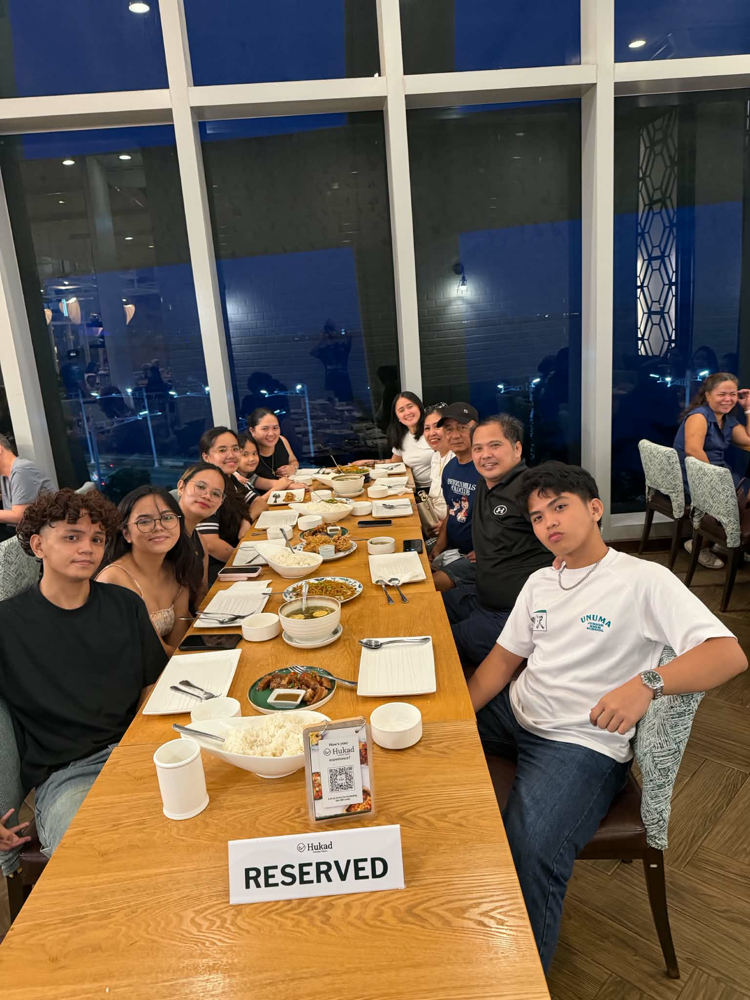
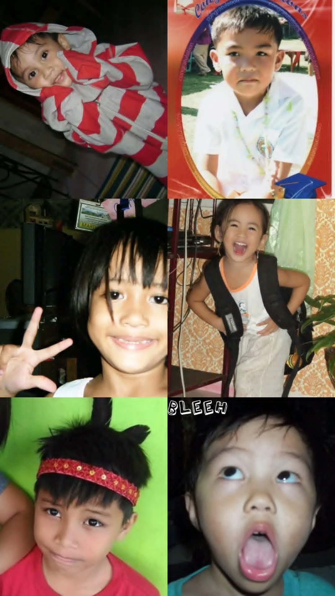
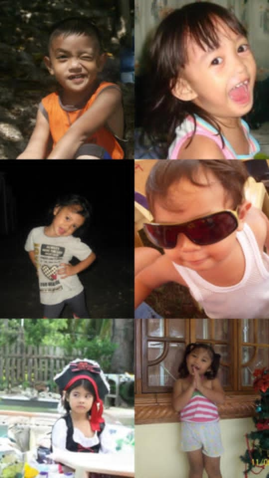

About My Family
My family is not perfect, but they are my kind of perfect. They are the people who make ordinary days feel special and difficult
days a little easier. We may have different personalities, opinions, and even misunderstand each other sometimes, but at the end of
the day, we always find our way back to one another. They are my first home, my biggest support system, and the people I can always
count on. Every laugh, argument, meal, and simple moment we share becomes a memory I will treasure. No matter where life takes me,
my family will always be the place my heart calls home.



What Makes My Family Special
- My family is not perfect, but they are my kind of perfect.
- They make me happy even on simple days.
- They help when I have problems.
- We sometimes argue over small thing.
- We sometimes have different opinions.
- Even when we fight, we still love each other.
- We forgive each other after an argument.
- We enjoy eating meals together.
- We laugh and joke around with each other.
- We share many simple but happy moments.
- My family support me when I feel tired or discouraged.
- They encourage me to do my best.
- I feel safe and comfortable when I am with them.
- I can talk to them when something is bothering me.
- They teach me be kind and responsible.
- They are the people I can trust.
- I am thankful for everyting they do for me.
- I will always treasure the moments we make together.
- No matter where I go my family will always be my home.
Reasons Why I Love My Family
- My family may not be perfect, but they are perfect to me.
- They bring joy to even the simplest of days.
- They help when I have problems.
- They stand by me wherever I face different.
- We my disagree over small matters at times.
- Even when we argue, our love for one another remains.
- We learn to forgive and reconcile after every misunderstanding.
- We cherish every meal we share together.
- We fill our home with laughter and lighthearted moment.
- We create countless simple yet joyful memories.
- My family support me when I feel tired or discouraged.
- They encourage me to do my best.
- I feel safe and comfortable when I am with them.
- I can talk to them when something is bothering me.
- They guide me to be kind,honest, and responsible.
- They are the people I trust most in the world.
- I am deeply grateful for all they do for me.
- I will forever treasure every moment we spend together.
- Wherever I my go, my family will always be my home.
About My Circle of friends
My circle of friends means a lot to me. They are the people I can be comfortable with and be myself around. I don’t have to
pretend when I’m with them because they accept me for who I am.I really enjoy spending time with my friends. We laugh at
silly things, share stories, eat together, and sometimes just talk about random stuff. Even simple moments become memorable
when we are together.
My Circle of Friends
- Best friends
- Friends who feel like family
- Trusted Friends
- Fun & Happy Friends
- Best friends
- Friends who feel like family
- Trusted Friends
- Fun & Happy Friends
https://www.churchofjesuschrist.org/?lang=eng